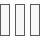

Seattle Demographics
Attribute:
Population 18+
Household income 0-$35K
Household income $35K - $75K
Household income $75K - $200K
Household income >$200K
Pop 25+ earned a college degree
Pop 25+ with no college degree
Homes worth 0-$150K
Homes worth $150K - $300K
Homes worth >$300K
Male
Female
Filter by:
City of Seattle
Median HH income $50K - $100K
Median Home Value > $500K
>50% have a bachelor's degree
Filter by map extent
Clear extent filter
Theme:
High to low
Above and below
Centered on
Extremes
